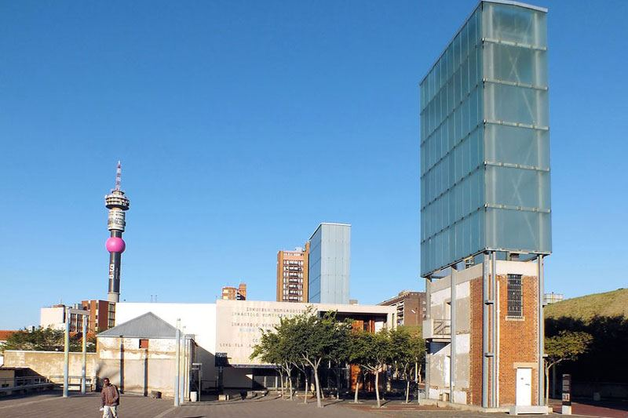
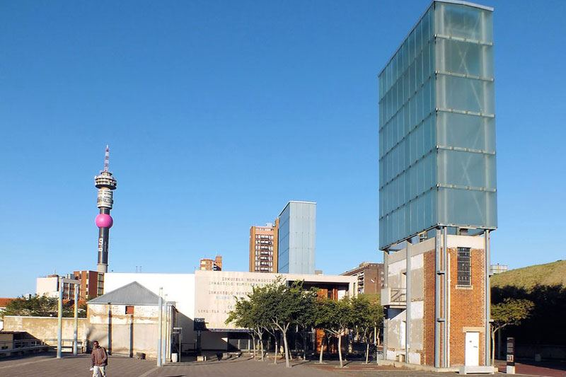

Gauteng means "place of Gold". This is the smallest of the
9 provinces, but has the highest population density.The
Metropolis of Johannesburg and Pretoria are situated here.
 


Above are images of Newtown in Johannesburg, wich is popular
for Jazz Music Festivals, the iconic buildings of Constitution
Hill, and the busy Gold-Reef City, amongst many other attractions.